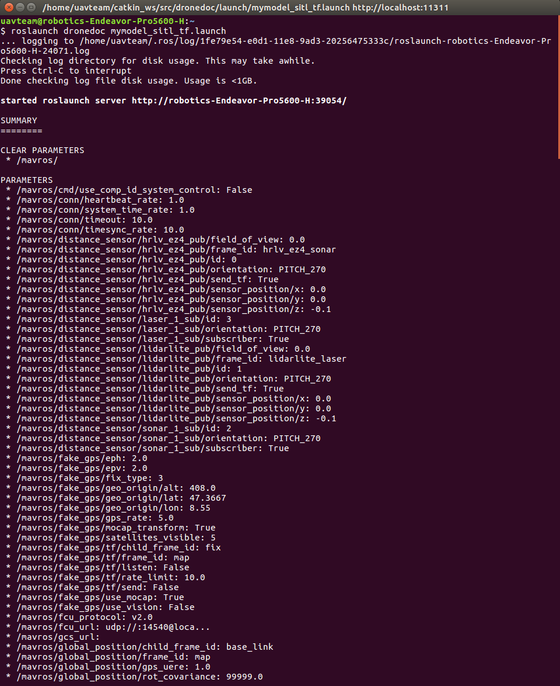

2. ROSの基本¶
2.1. ROSコマンド¶
TODO
2.2. パブリッシャとサブスクライバ¶
TODO
2.3. サーバとクライアント¶
TODO
2.5. パラメータ¶
ROSノードは、再利用性を高めるためにパラメータを用いてその動作を変更できるようにしてあります。
ノード内でパラメータを利用する方法については、 roscpp と rospy のドキュメンテーションを参考にしてください。
2.5.1. rosparam コマンド¶
ノードのパラメータは rosparam コマンドを使って確認したり設定したりすることができます。
rosparamコマンドについては rosparam - ROS Wiki を見てください。
また、Launchファイルからノードを起動した時は、以下のようにパラメータ一覧が表示されます。
